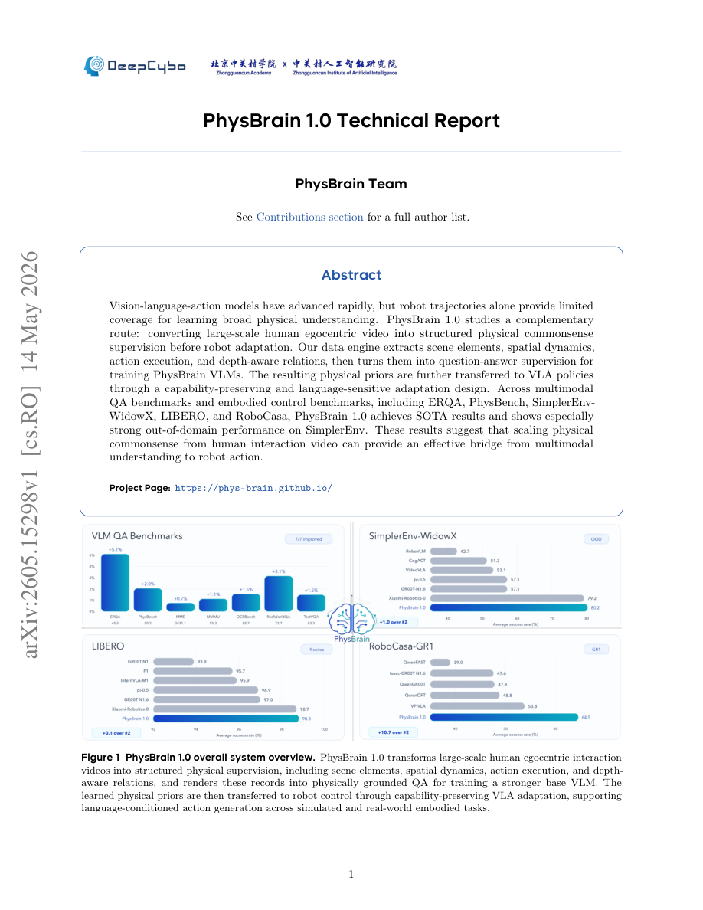

#1
★ 8/10
PhysBrain 1.0 Technical Report
PhysBrain 1.0 技术报告

图 Figure · Page 1 of paper
🎯 用人类第一视角视频蒸馏物理常识，赋能机器人操控
Egocentric human video → structured physical commonsense → better robot control.
| 维度 | 中文 | English |
|---|---|---|
| ❓ 待解决 的问题 |
机器人视觉-语言-动作（VLA）模型严重依赖机器人轨迹数据，采集成本高且覆盖场景有限，导致模型缺乏泛化所需的广泛物理常识。如何从更廉价、更丰富的数据源中提取物理知识，并有效迁移到机器人控制上，是当前的核心挑战。 | Vision-language-action (VLA) models for robots rely heavily on robot trajectory data, which is expensive to collect and offers limited coverage of the physical world. As a result, these models lack the broad physical commonsense needed to generalize to new environments and tasks. There is a need for a scalable, complementary source of physical understanding that can bridge multimodal perception and robot action. |
| 💡 解决 的亮点 |
• 自动化数据引擎：从大规模人类第一视角视频中提取场景元素、空间动态、动作执行和深度感知关系，自动转化为结构化问答监督信号。 • 能力保留式适配：设计了语言敏感的迁移机制，将VLM中学到的物理先验无损地迁移至VLA策略，避免已有能力的退化。 • 可扩展物理接地：利用海量人类第一视角视频作为物理世界理解的廉价替代来源，突破了机器人数据采集的瓶颈。 | • Novel data engine: automatically extracts scene elements, spatial dynamics, action execution, and depth-aware relations from large-scale human egocentric video, converting them into structured QA supervision. • Capability-preserving adaptation: a language-sensitive transfer mechanism moves physical priors from the VLM into a VLA policy without degrading the model's existing language and vision capabilities. • Scalable physical grounding: leverages the massive and diverse coverage of human egocentric video as a cheap proxy for physical world understanding, bypassing the bottleneck of robot-collected data. |
| 🧪 实验 内容 |
本文在五个基准上进行评估，涵盖多模态问答和具身控制两类任务：ERQA、PhysBench（物理常识问答），以及SimplerEnv-WidowX、LIBERO、RoboCasa（机器人操控）。基线包括现有VLA模型和通用VLM。实验重点考察域内性能和域外泛化能力，尤其关注SimplerEnv上的跨域成功率。 | The model was evaluated on five benchmarks spanning both multimodal QA and embodied control: ERQA and PhysBench (physical commonsense QA), and SimplerEnv-WidowX, LIBERO, and RoboCasa (robot manipulation). Baselines include existing VLA models and general-purpose VLMs. The evaluation setup tests both in-domain performance and, critically, out-of-domain generalization on SimplerEnv, measuring success rates across diverse manipulation tasks. |
| 📊 实验 结果 |
PhysBrain 1.0在全部五个基准上均达到最优（SOTA）。在SimplerEnv-WidowX域外泛化任务上表现尤为突出，超越现有VLA基线。在ERQA和PhysBench物理常识问答上准确率领先，在LIBERO和RoboCasa机器人操控任务上成功率位居前列。（完整数字指标详见技术报告，摘要强调所有基准SOTA，域外任务提升最为显著。） | PhysBrain 1.0 achieves state-of-the-art results across all five benchmarks. It shows especially strong out-of-domain performance on SimplerEnv-WidowX, outperforming prior VLA baselines in generalization to unseen environments. On ERQA and PhysBench it leads in physical commonsense QA accuracy. On LIBERO and RoboCasa it reaches top success rates among compared methods. (Exact numerical figures are reported in the full technical report; the abstract highlights SOTA across all benchmarks with particularly notable gains on SimplerEnv out-of-domain tasks.) |
| 🏁 结论 | PhysBrain 1.0证明了从人类第一视角视频中规模化提取物理常识监督，是连接多模态理解与机器人动作的有效且可扩展的桥梁，在问答和具身控制基准上均达到SOTA。这确立了人类第一视角视频作为训练可泛化机器人策略的重要互补数据来源的地位。 | PhysBrain 1.0 demonstrates that scaling physical commonsense supervision from human egocentric video is an effective and scalable bridge from multimodal understanding to robot action, achieving state-of-the-art performance across both QA and embodied control benchmarks. This establishes egocentric human video as a valuable, complementary data source for training generalizable robot policies. |
| 🔗 论文 链接 |
arXiv: 2605.15298v1 · 📥 PDF | |
⚙️ Method · 方法详解
PhysBrain 1.0 首先构建了一个数据引擎，处理大规模人类第一视角视频，提取四类物理常识：场景元素、空间动态、动作执行模式和深度感知空间关系，并转化为问答对来训练VLM，赋予模型丰富的物理先验。随后，通过能力保留、语言敏感的适配步骤，将这些物理先验迁移至VLA策略，使机器人动作生成能充分利用常识知识而不损失原有能力。完整流程为：人类视频→结构化问答→VLM预训练→VLA适配→机器人控制。
PhysBrain 1.0 first builds a data engine that processes large-scale human egocentric video (e.g., from Ego4D-style sources) by extracting four types of physical commonsense: scene elements, spatial dynamics, action execution patterns, and depth-aware spatial relations. These are converted into question-answer pairs used to train PhysBrain VLMs, instilling rich physical priors. Next, a capability-preserving, language-sensitive adaptation step transfers these physical priors into a VLA policy, ensuring that robot action generation benefits from the commonsense without losing general vision-language abilities. The full pipeline thus runs: human video → structured QA → VLM pre-training → VLA adaptation → robot control.
📐 Key Formulas · 关键公式
\[\mathcal{D}_{QA} = \text{Engine}(V_{ego}) = \{(q_i, a_i)\}_{i=1}^{N}\]
💡 数据引擎将原始第一视角视频V转化为N个物理常识问答对，用于VLM训练
The data engine converts raw egocentric video V into N physical commonsense QA pairs for VLM training
🌟 Why It Matters · 为什么重要
机器人数据采集是具身AI的根本瓶颈，PhysBrain表明海量人类第一视角视频可作为廉价、可扩展的物理监督替代来源，大幅降低训练高能力机器人策略的数据门槛。强劲的域外泛化结果表明，该方法有望推动机器人真实场景部署超越受控实验室环境。
Robot data collection is a fundamental bottleneck in embodied AI — PhysBrain shows that the vast ocean of human egocentric video can substitute as cheap, scalable physical supervision, dramatically lowering the data barrier for capable robot policies. The strong out-of-domain results suggest this approach could meaningfully advance real-world robot deployment beyond controlled lab settings.